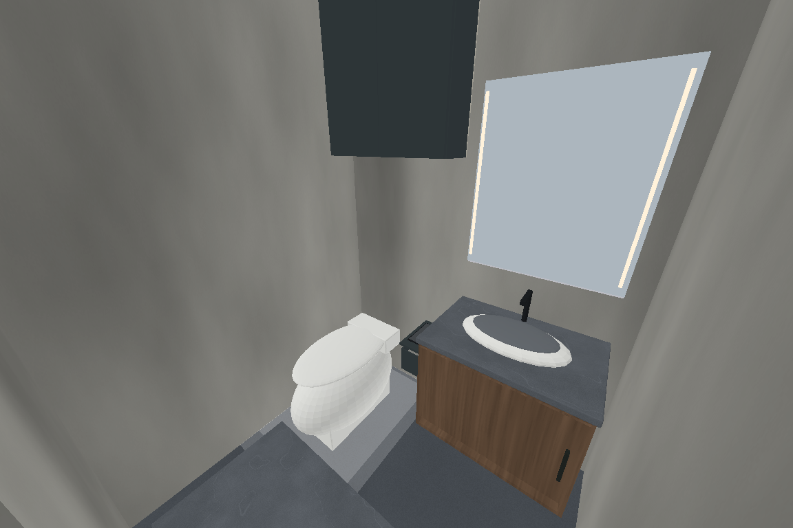
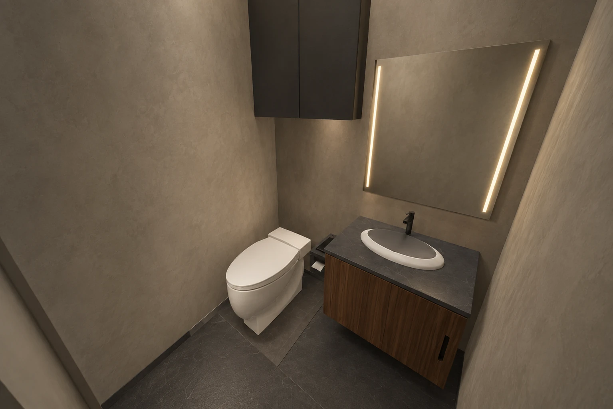
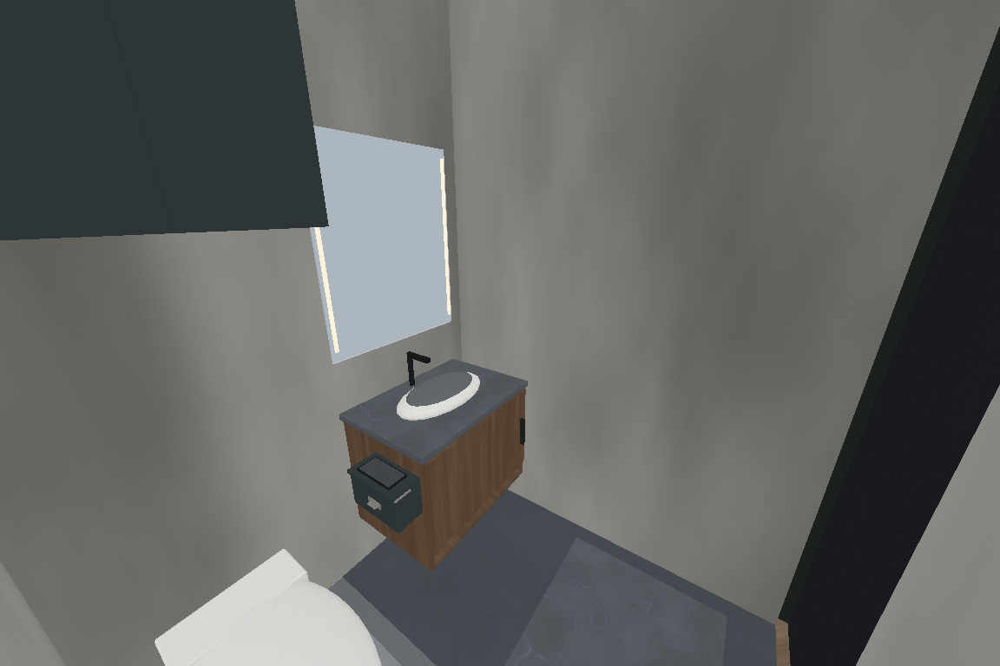
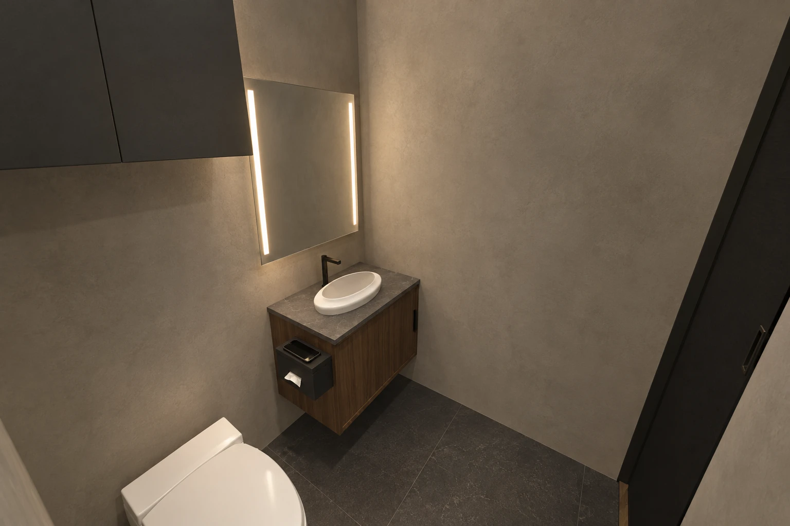
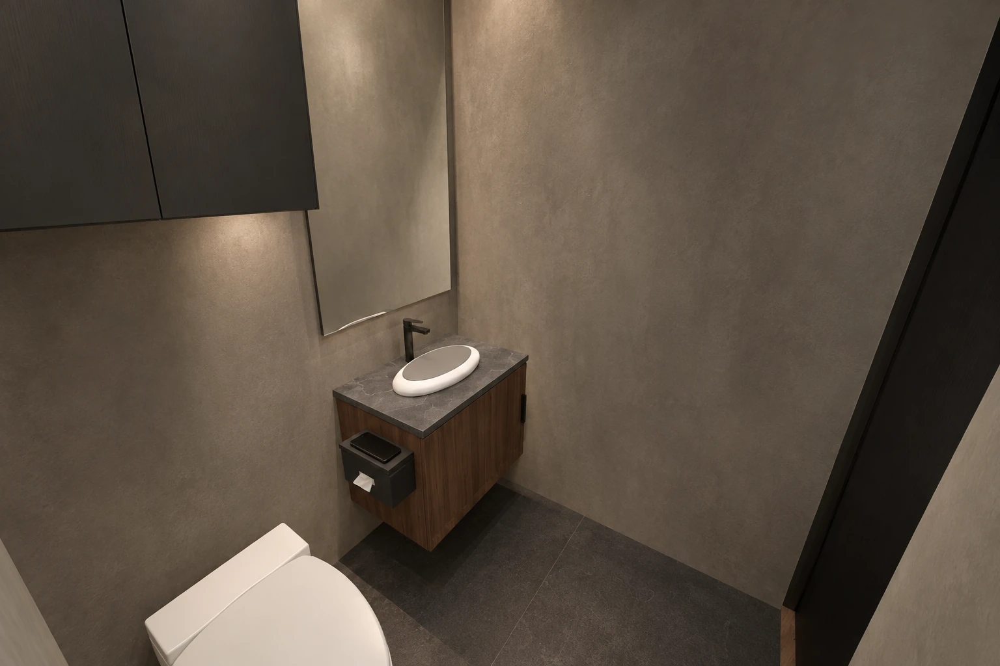

2026-09-21 · V0～V4 共用客浴更新 · GB-R04客浴原位收納與手邊置物
馬桶、洗手檯與入口維持原位。上方封閉櫃收備用紙品與毛巾，清潔用品沿用下方浴櫃分區；手機平台與使用中的抽取式衛生紙設在浴櫃靠馬桶側。
查看五版客浴模型／AI圖集 →
| 新增配置 | 模型試配值（cm） |
|---|
| 封閉備品櫃 | 含門片外徑70寬×22深×80高；完成地坪至櫃底150。內寬66.4，層板有效深18.2。 |
| 手機暫放平台 | 沿浴櫃側板24長、朝馬桶突出12；完成地坪至平台頂68。 |
| 抽取式紙盒 | 11突出×24長×12高，底離地53；試配可向馬桶側取出補包，實際紙包與掛扣待選。 |
尺寸屬試配，需現場複量與坐姿、起身、伸手及補包實試。平台不作扶手；圓角、防潮封邊、五金與牆內管線由設計及施工端確認。
V1｜上方備品櫃

3D模型取景｜GB-R04
AI概念示意｜尺寸與五金不以效果圖核定V1｜手機與抽取式衛生紙

3D模型取景｜GB-R04
AI概念示意｜尺寸與五金不以效果圖核定V0／V2／V3／V4｜同位置收納，保留各版照明
3D模型取景｜GB-R04
AI概念示意｜尺寸與五金不以效果圖核定 本次核對範圍
五版模型的新增櫃門與原浴櫃門開啟、紙盒取出補包及客浴入口開關檢查通過；其餘房間、馬桶、浴櫃與門口幾何比對保持。15個客浴圖位依相同來源共用5張新AI圖，其他175圖位沿用。此為模型與離線圖面核對，不是現場施工或人體驗證。
V1其他區域維持R05，其他版本維持各自既有配置。此前全屋檢視的收藏室、主浴雙門等待辦不在本次修正範圍。
本次模型核對紀錄